4. Travel through the West of Spain and annexed Portugal
4. Travel through the West of Spain and annexed Portugal
September 9 to 13, 2021
Day 1, from Toledo to Coria
September 9, 2021

I left Toledo in the morning for Plasencia, the first large and monumental city of the trip.


61. Oropesa
61. Oropesa
Stop in
Oropesa, a Toledo city with a lot of history. Of Roman origin, it would be conquered by Arabs and reconquered by Christians, and it would not be important until the 15th century, the date on which the Catholic kings appointed Fernando Álvarez de Toledo, first Count of Oropesa, a noble family that would improve the castle of the town and they would make a palace near him. It also has important religious buildings.
Firstly, I would visit the Oropesa palace from the outside since visiting the interior was done by guided tour and I was already late and it was also the town's festivals. This palace is made up of two palace complexes:
the Old Palace or Doña Elvira Palace from the 14th century and in the Mudejar Gothic style; and
the New Palace from the 16th century and currently converted into a Parador de Turismo. This palace would begin to be built in the 16th century, in a Renaissance style similar to other noble palaces of Castilian families. Attached to the palace is the Oropesa Castle or Old Castle, which was originally the residence until the 15th century when the new Gothic-Mudejar style palace was built.
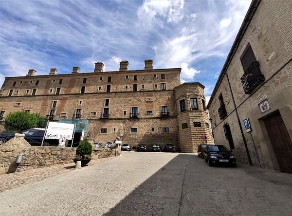
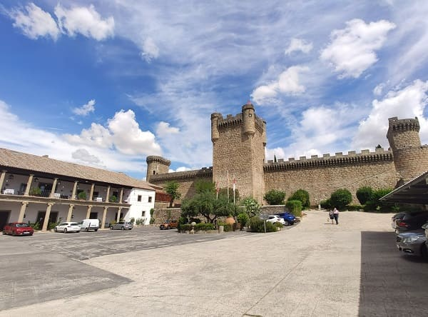
Nearby is
the church of Nuestra Señora de la Asunción, a large 15th-century building in the Plateresque style, in which the church portal stands out. Nearby is
the chapel of San Bernardo, where Don Francisco de Toledo, V Viceroy of Peru, is buried. It is attached
to the Jesuit College. These monks would come to the city in the 15th century, very close to the counts of Oropesa.
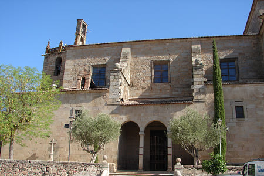
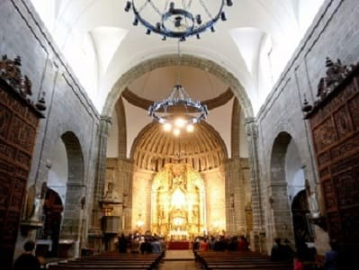
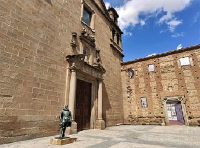
And it is that in addition to this man who was one of the most important in America, years before there were many conquerors who came from this city such as Captain Bernardino Vázquez de Tapia, companion of Hernán Cortés in the conquest of Mexico; Rodrigo Orgóñez conqueror in Peru and first mayor of Cuzco: Fray Vicente Valverde, first bishop of Cuzco; or Don Francisco de Toledo, son of the Count of Oropesa and Viceroy of Peru, whose birthplace we can see. Another of his important characters is Alonso de Orozco, a 16th century writer included in the writing of the Golden Age of Spanish literature, whose birthplace is still preserved.
Finally, you would see the square of the town called
Plaza del Navarro and the town hall, in which the Mudejar-style clock tower that housed the silk factory centuries ago stands out. The square is decorated with several benches with tiles from Talavera de la Reina.
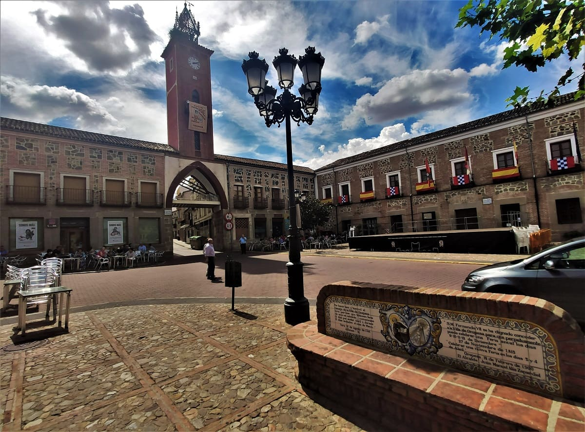
I didn't spend more than 1 hour seeing the town, but if you look at all the elements carefully you can take a good morning.

62. Cuacos de Yuste
62. Cuacos de Yuste
Shortly after passing Talavera de la Reina, I turned off to the northwest, in order to visit the Yuste Monastery that is located in
Cuacos de Yuste.
This monastery, which has two large cloisters and a beautiful church, is important because it was the place where Carlos V died, the Spanish man along with his son Philip II, the most powerful in the world in his time, in the 15th century.


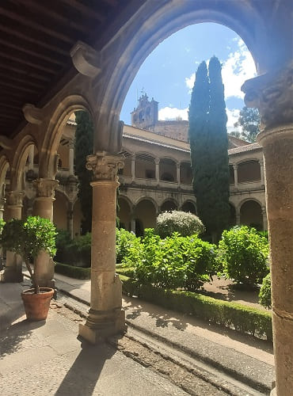
The monastery is a world heritage site, but except for the importance of Charles V having spent his last years, it has nothing special. It was built almost two centuries before Carlos V lived. It is quite austere and that is if you can visit the rooms where the king lived, although it is not allowed to take photographs either in the rooms or in the church. The church has a large coat of arms of Carlos V at the top and communicated with his room.
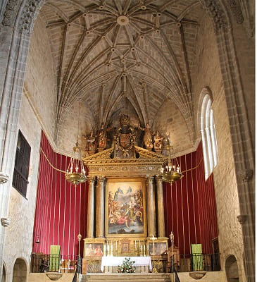
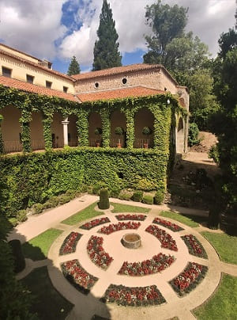
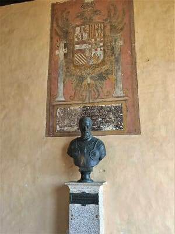
In it there are two large cloisters, one Gothic and the other Renaissance that can be seen in the image. All the interior rooms would be set on fire by the French troops, but in the 20th century the monastery would be rebuilt bringing objects from other places to make a staging of the rooms of Carlos V.
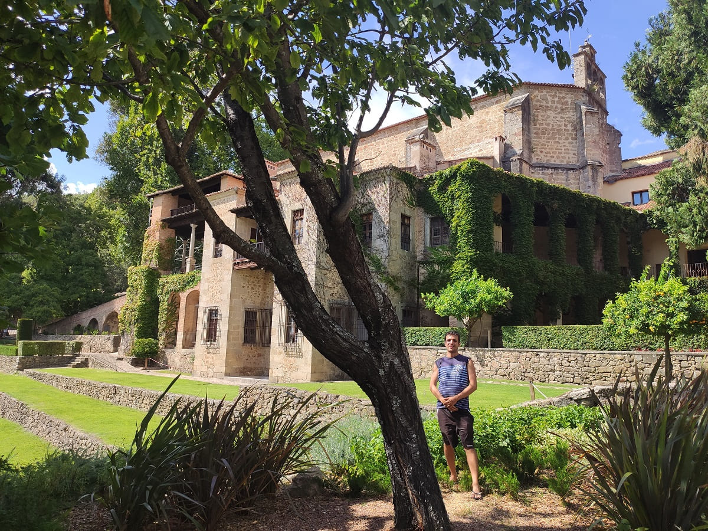
Once seen, go to see the town,
Cuacos de Yuste, whose porticoed square is very well preserved and the fountain is typical of the towns in this area, the towns of La Vera where its paprika is famous , the one of the Vera. In it is also the Plaza de Don Juan de Austria, or Plaza del Infante, bastard son of King Carlos V who would gain much prestige in his military career in several of the most glorious battles of the Spanish empire, although he would die young.
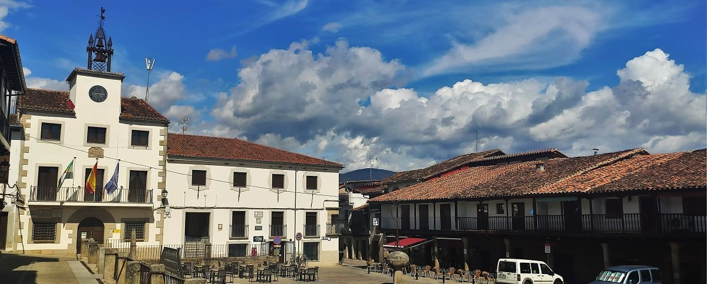
The Church of the Assumption stands out as the church of the town, which began to be built in the 13th century. Although the most important elements are from the 17th century, such as the neoclassical-style polychrome wooden altarpiece, seen in the image.
There he would also take a bath in the natural pool called El Bañaero, in the stream that runs through it.
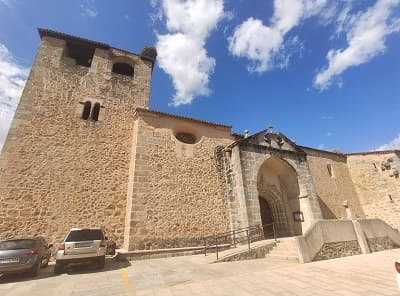
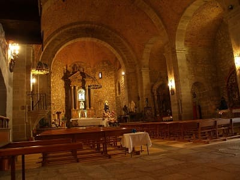
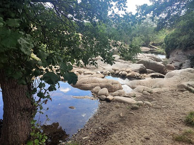


63. Garganta de la Olla
63. Garganta de la Olla
Past Cuacos, I would stop at
Garganta de la Olla another town in La Vera, very typical. This town is a fairly well-kept and very touristy town where they sell products from the area. It is full of old houses that have kept their appearance for years.
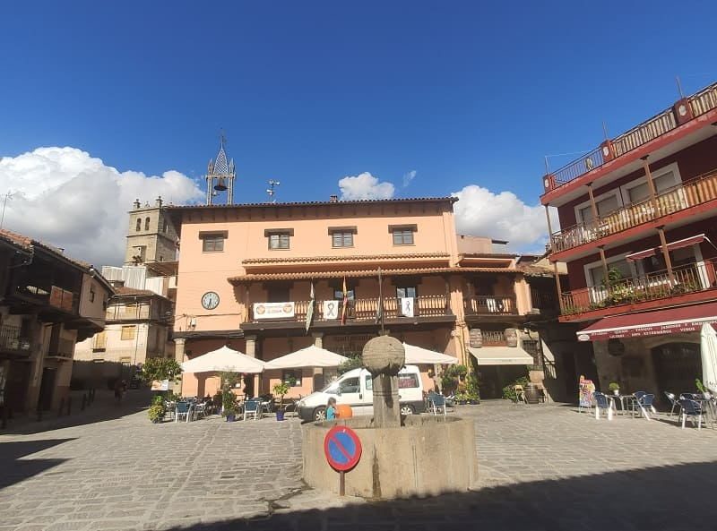
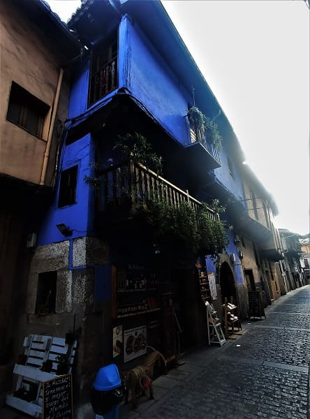
As religious buildings
the church of San Lorenzo, from the 15th century, very well preserved, with baroque altarpieces. The brick vault, rare in religious architecture and more typical of warehouses or factories of those times, stands out.
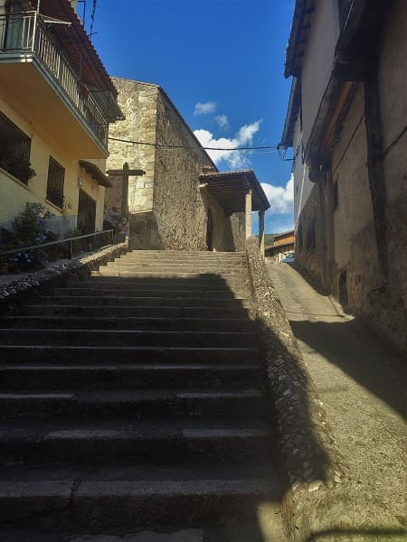
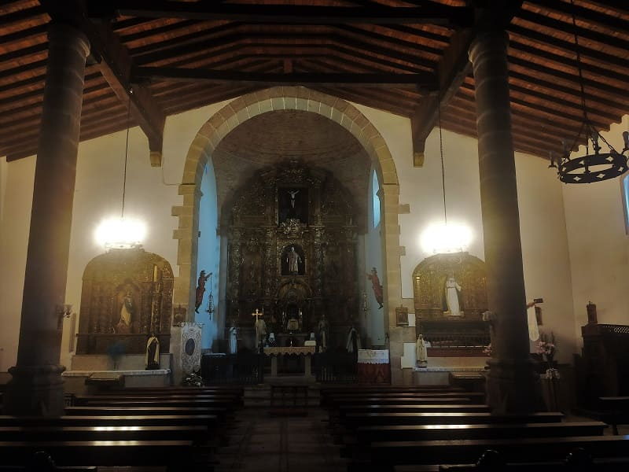
There we can find
some natural pools called Las Pilatillas, in which if you continue further down the stream you will find several natural waterfalls, although the water is quite cold.
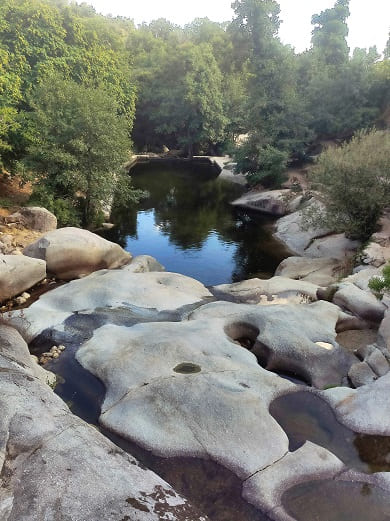
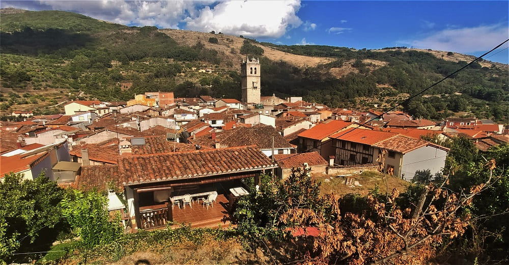
Once the visit of these two towns was finished and having eaten, I headed towards Plasencia.


64. Plasencia
64. Plasencia
In Plasencia I would leave the car very close to the wall.
Plasencia is the most important city in the north of Cáceres. Its name comes from "placeat in Latin, to please God and men". It would be founded on a settlement already populated in Arab times. It would be in the 12th century, years after the capture of the city, when the diocese would be created in the city and after this it would be fortified with defensive walls and towers that still remain today and are one of its attractions.
In the 13th century, the city's charters would be established, which would call on the northern towns to repopulate them.
The period of splendor of the city is the fifteenth century in which several of the richest families in the area settled and would create their palaces. In addition, the first university with humanistic studies would be created.
At the end of the 15th century, King Ferdinand the Catholic would establish his residence in the city. Due to this, the clergy would also be attracted, who would build several churches in the area. Years later the current Plasencia aqueduct would be built, increasing the water capacity and one of the city's monuments, as well as the different bridges and gates of the wall.

It would enter very close to the Puerta del Sol from the northeast via Calle Rey, which leads directly to
the Plaza Mayor. On this street there are numerous
palatial mansions such as the Tamayo or the Argollas and it is as important as the Calle Mayor.
The Plaza Mayor is quite large and open and in it stands out
the City Hall building. This has a style between Gothic and Renaissance and the prison was located in its antiquity. A shield of Felipe IV stands out on its side.


Going down the street we find
the church of San Esteban and the monastery of La Encarnación, before reaching the cathedral square. Buildings from the 15th and 16th centuries, respectively, in the Gothic and Plateresque styles. Very close to the Las Claras cultural center, the former convent of Santa Clara. Today it is the tourist office and it has been fully restored both inside and out. A coffered ceiling with heraldry of the noble families of the city stands out, and the vault with different shields of the noble families of the city. The entrance is seen in the third image.


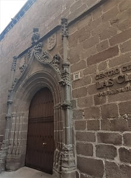
The Cathedral of Plasencia is one of the few cathedrals in Spain that preserves its old part and its new part, since the old part was not restored but rather preserved and expanded.
- Old Cathedral or Church of Santa María that presents the originality of offering two buildings overlapping architecturally and differentiated in time and style. Currently Plasencia Cathedral Museum, it is a building that constitutes a very interesting example of the transition from Romanesque to Gothic and constitutes one of the greatest architectural values of the city. Its construction began at the beginning of the 13th century and the last proto-Gothic contributions occurred in the 15th century
- New Cathedral started in 1498 and continued throughout the 16th century in the Gothic-Renaissance style. The main architects of this century participate in its construction more or less directly.
The choir, which follows the line of the 15th century Spanish choir stalls, where the seats of the Catholic Monarchs are shown, and the Bishop's Chair are objects of special interest within the new cathedral building.
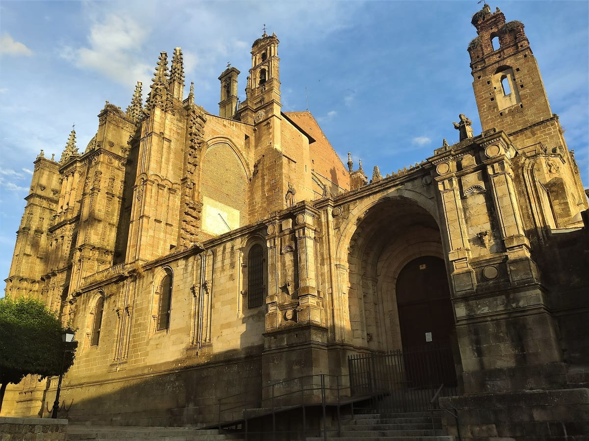
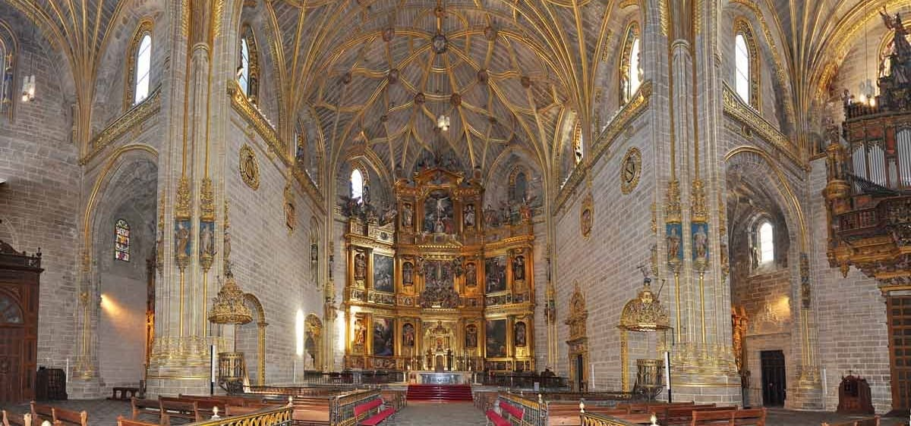
Not far from the cathedral is the Coria gate that overlooks the outskirts of the historic center, hitting the Jerte river, the old defensive limit of the city, which is why the most defensive walls are on the other side of the river, in the North part.
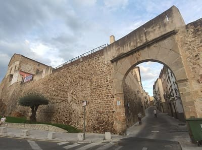
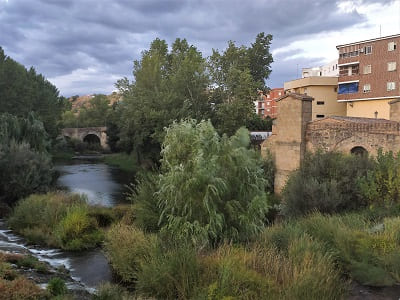
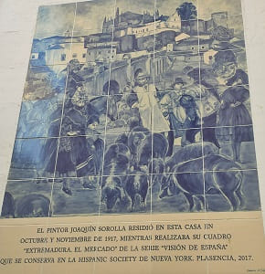
Near the cathedral there are also numerous palaces such as
the house of the Dean or Archdeacon of Trujillo of large proportions, with a shield in its corner as the greats of Extremadura used to do. In front is the house of the painter Sorolla. And going up the slope a little more
the Monroy palace or Torres house.
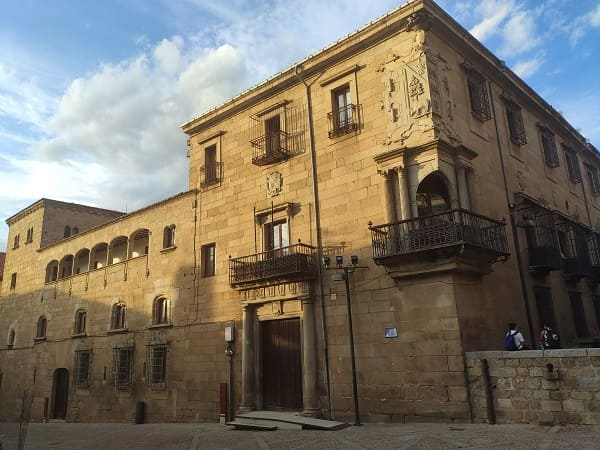
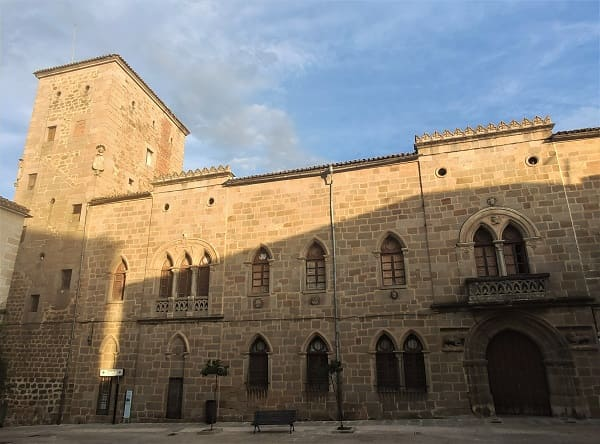
Higher up is
the palace of the Marquis of Mirabel and the convent of Santo Domingo, currently transformed into a National Parador.
The convent was very large and still has numerous rooms from the period, such as the chapter house, and objects that can be seen.
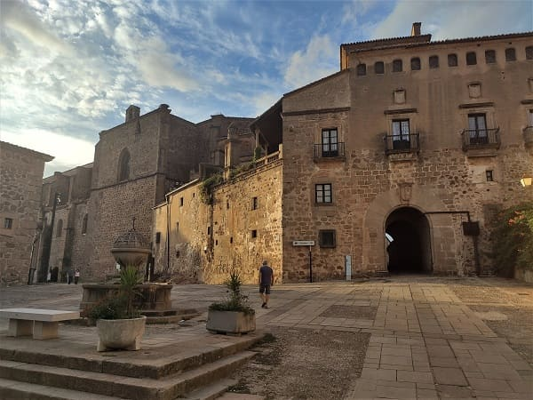
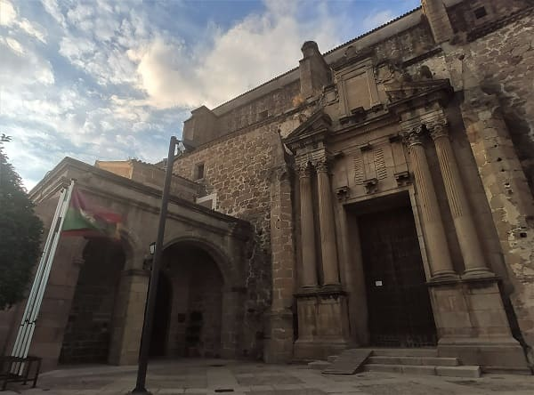
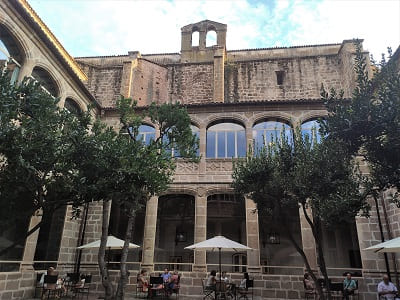
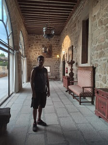
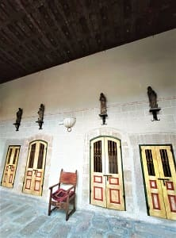
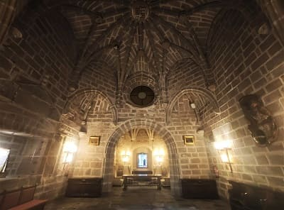
In front of the national hostel is the church of San Nicolas, which dates from the 13th century. It is the oldest church in the city and it is on the square that bears its name, in Romanesque style, it is one of the key meeting points.
It was restored in the 15th century and inside it looks more Gothic, but it still preserves Romanesque elements such as the portals (see the main one in the image) and a baptismal font. In it there are several bishops buried.
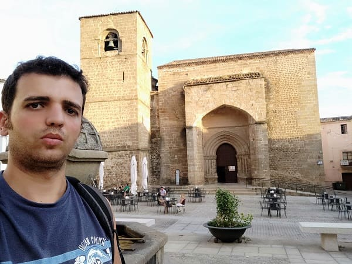
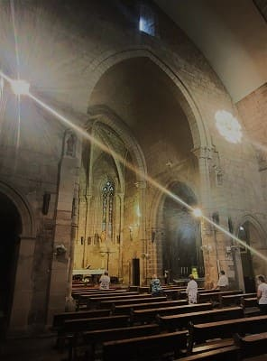
Very close to the Parador is
the Romanesque-style church of San Martín, but with a more recent interior. Pulling towards the wall we find
the door of Trujillo, in the image in front and behind. Continuing outside the city, we see
the Berrozana gate and the Alhondiga on the wall.
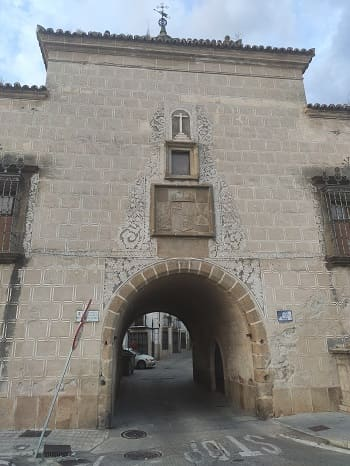
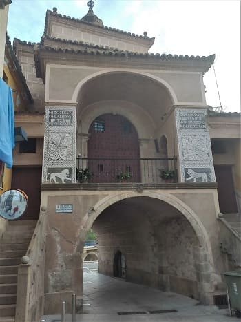
And back to the car we will find the church of El Salvador. Church from the same time as that of San Nicolas, which began as a Romanesque and continued with the Gothic style, but due to the fact that it collapsed, it was almost completely rebuilt. The interior is simpler than that of San Nicolas, with almost no Romanesque elements.
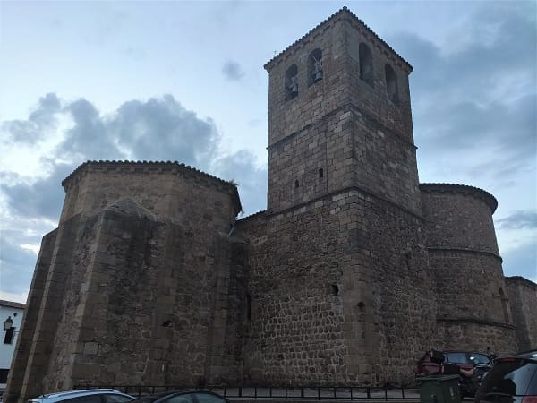
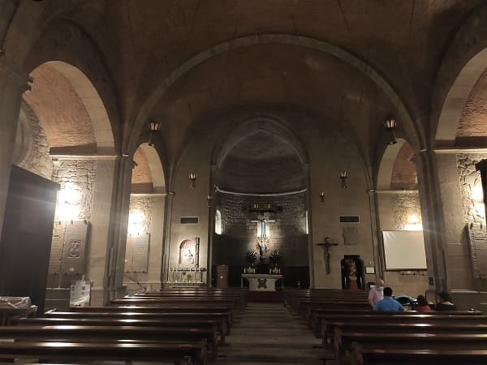
I would go out on Juan Carlos I avenue and on the way to the motorway I would stop by to see the Roman aqueduct.
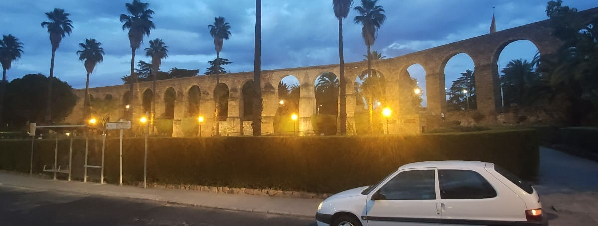
Castle s.XII and main square.
1
Yuste Monastery, 15th century and main square.
2
Church of San Lorenzo, 15th century and Pilas dam
3
Day 2 Coria to Castello Branco (CLICK to continue)
September 10, 2021

![[Valid RSS]](https://www.onepointsync.com/wp-content/uploads/2016/08/valid-rss-rogers.png "Validate my RSS feed")